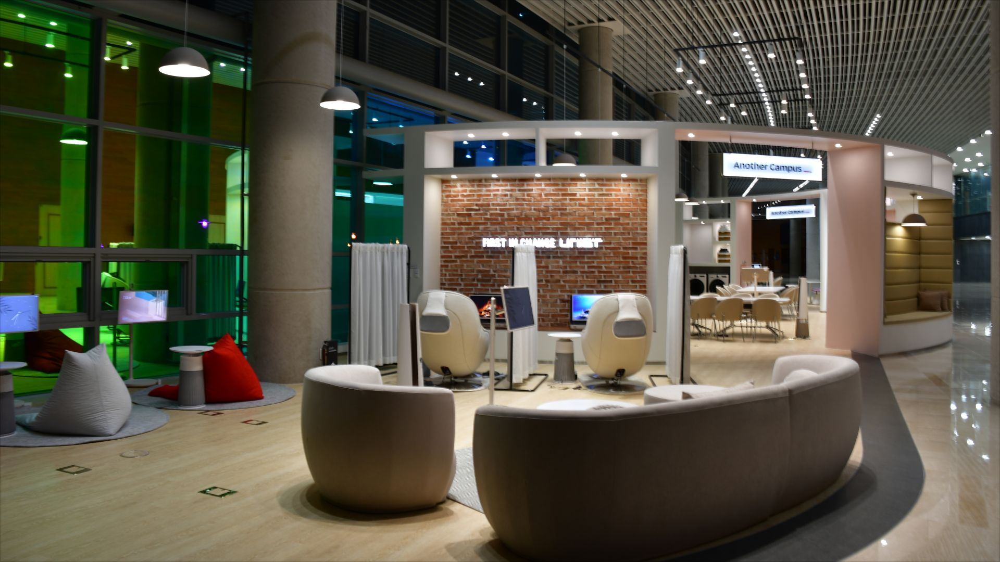
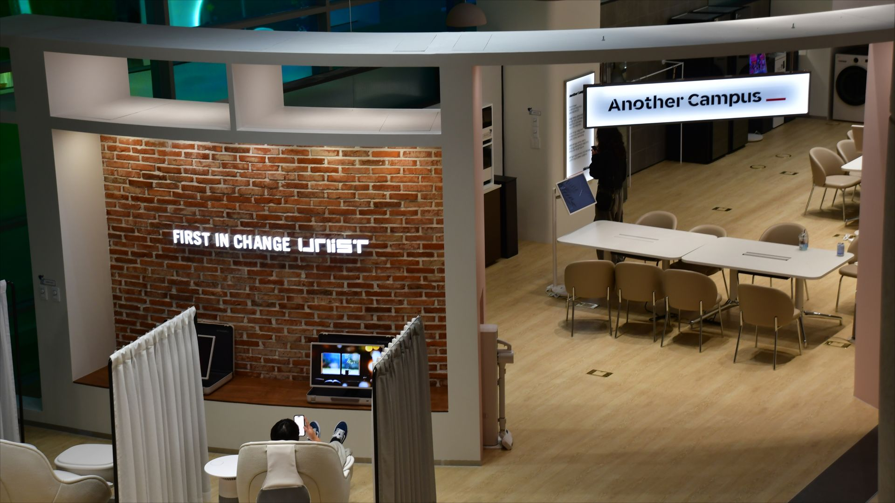
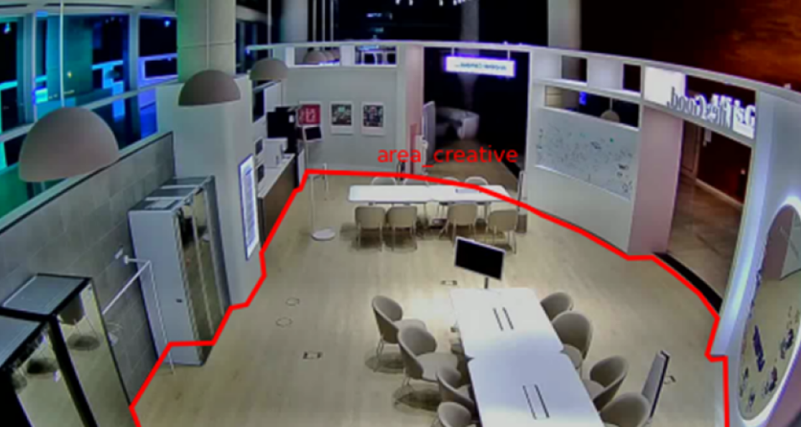
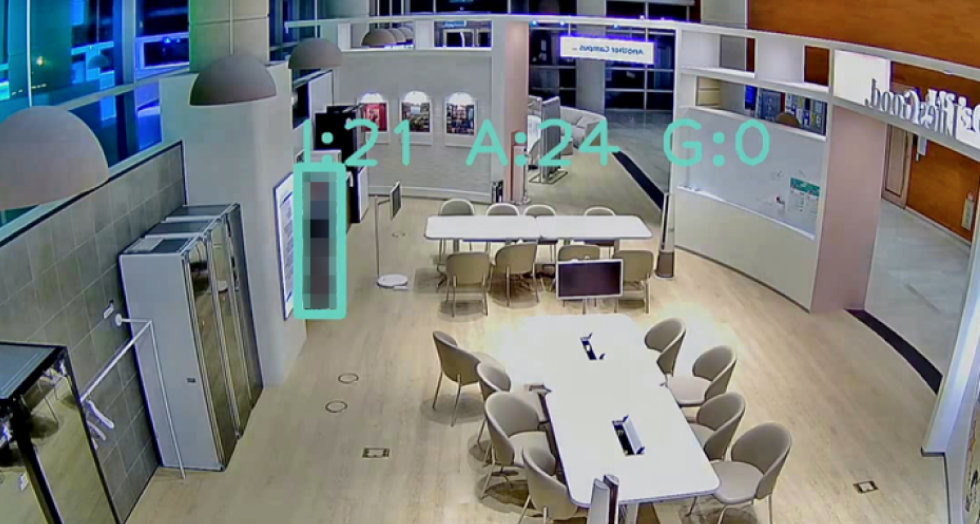
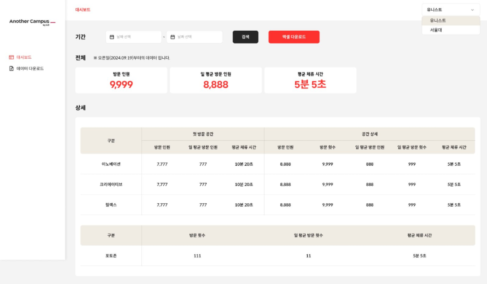
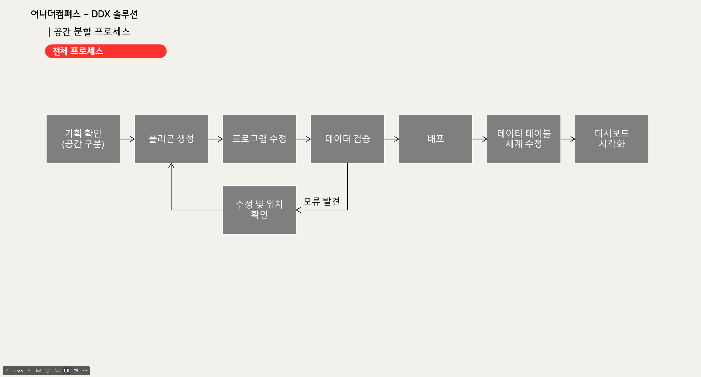
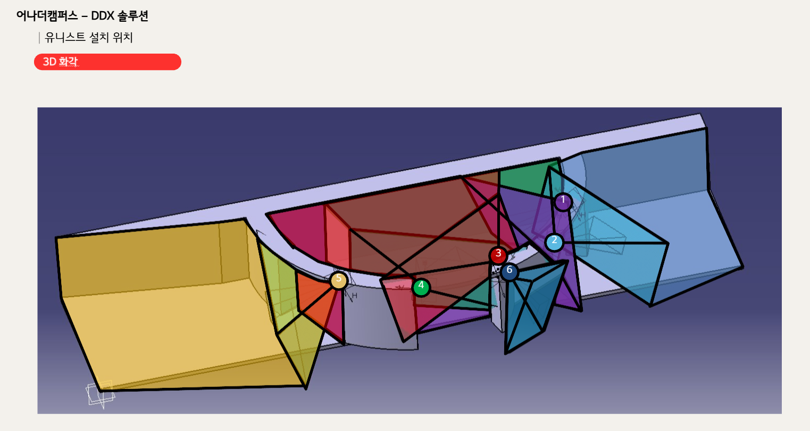

공간 데이터 / 영상 분석 운영
CCTV 영상 데이터를 공간 운영 지표로 전환했습니다.
5연결한 CCTV 분석 채널
AI영상 기반 방문자 행동 분석
O2O공간 경험과 운영 데이터의 연결
기간2024.06 – 지속
프로젝트LG전자 어나더캠퍼스 공간 데이터 분석 솔루션
담당공간 분석 설계 · 데이터 요건 · 운영 대시보드 · 현장 구축 조율

방문·체류 데이터를 공간 운영에 활용하는 영상 분석 솔루션을 설계했습니다.
어나더캠퍼스는 제품 체험·상담·휴식이 공존하는 무인 체험 공간입니다. CCTV 영상에서 공간별 방문 인원과 체류 시간을 분석하고, 운영자가 대시보드에서 조회할 수 있도록 현장 장비·분석 시스템·운영 지표를 연결했습니다.



방문자 수를 넘어 공간별 이용 방식과 체류를 읽을 데이터가 필요했습니다.
CCTV 영상 수집부터 대시보드 조회까지 데이터 흐름을 설계했습니다.
01CCTV·NVR·PC 기반의 영상 수집 환경 구성
02공간 목적과 카메라 화각을 반영한 분석 구역 정의
03분석 구역과 방문자 인식 결과의 현장 검증
04공간별 방문·체류 데이터 수집 및 저장
05대시보드에서 기간·공간별 방문·체류 지표 조회
공간 운영 요건을 영상 분석과 현장 구축 기준으로 구체화했습니다.
공간 운영 목적과 분석 대상·대시보드 지표 협의
CCTV 객체 인식과 방문·체류 데이터 분석 시스템 구현
- 분석 구역 요건 정의공간 목적과 고객 동선, CCTV 화각을 바탕으로 분석 대상 구역과 측정 기준 정의
- 운영 지표 정의기간·공간별 방문 인원과 평균 체류 시간을 대시보드 지표로 정의
- 데이터·화면 요건영상 분석 결과와 대시보드 조회 항목의 데이터·화면 요건 정의
- 구축·검증 조율CCTV 설치, 시스템 최적화, 데이터 검증과 현장 테스트 일정 조율
역할 범위: 공간 목적과 고객 동선, CCTV 화각을 바탕으로 분석 대상과 측정 기준을 정의했습니다. 협력사의 영상 분석 방식을 이해하고 분석 구역 설정과 데이터 검증을 조율했으며, 방문·체류 데이터를 기간·공간별로 조회하는 대시보드 요건을 설계했습니다. CCTV 설치부터 시스템 최적화와 현장 테스트까지 구축 일정도 조율했습니다.
공간 구역 설정부터 방문·체류 지표 조회까지 분석 기준을 설계했습니다.

공간 분석 01 · 분석 구역 정의
공간 목적과 고객 동선을 반영한 분석 구역 기준 정의
이동·체험·휴식 공간의 역할과 고객 동선을 기준으로 분석 대상 구역을 정의했습니다. 협력사와 분석 구역 범위를 협의해 각 구역의 방문·체류 데이터가 동일한 기준으로 수집되도록 했습니다.

공간 분석 02 · 영역 검증
카메라 영상과 실제 공간을 대조해 분석 영역 검증
협력사가 영상에 적용한 분석 구역과 실제 공간이 일치하는지 검증했습니다. 인식 오차가 발생하면 구역 범위와 측정 기준을 함께 조정하는 절차를 정의했습니다.

공간 분석 03 · 방문 측정
객체 인식으로 공간별 방문 인원 측정
협력사가 제공한 객체 인식 결과를 바탕으로 공간별 방문 인원 지표를 정의하고, 기간·공간별로 조회하는 대시보드 구조와 연결했습니다.

공간 분석 04 · 운영 대시보드
방문·체류 데이터를 운영자가 비교하는 대시보드 설계
기간과 공간을 선택해 방문 인원, 일 평균 방문 인원과 평균 체류 시간을 조회하도록 대시보드를 설계했습니다. 공간별 데이터를 비교하고 엑셀로 내려받아 운영 현황을 확인할 수 있도록 구성했습니다.
현장 조건과 운영 활용을 함께 고려해 분석 기준을 정의했습니다.
공간 운영 목적을 분석 구역과 측정 요건으로 전환했습니다.
이동·체험·휴식 공간의 운영 목적에 따라 분석 대상 구역과 측정 기준을 정의했습니다. 협력사와 CCTV 화각 및 폴리곤 적용 가능 범위를 검토해 객체 인식 결과를 공간별 이용 현황으로 해석할 수 있도록 기준을 구체화했습니다.
현장 영상과 분석 결과를 반복 검증하는 보정 절차를 설계했습니다.
협력사의 분석 구역 설정 결과를 실제 영상과 대조하고, 오차가 발생하면 구역 범위와 측정 기준을 조정했습니다. CCTV 설치·시스템 최적화·현장 테스트가 단계적으로 이어지도록 구축 일정을 조율했습니다.
개인 식별보다 공간 단위 통계에 초점을 맞췄습니다.
개별 방문자를 식별하지 않고 공간별 방문 인원과 체류 시간을 집계하도록 분석 범위를 설정했습니다. 운영자는 개인 영상이 아닌 기간·공간별 통계 지표를 조회하도록 대시보드 범위를 구성했습니다.
분석 구역·현장 장비·카메라 화각·구축 일정을 실행 기준으로 구체화했습니다.

CCTV 설치부터 기획·디자인·개발·시스템 최적화·현장 테스트까지 정리한 구축 WBS

분석 구역 설정부터 데이터 검증과 대시보드 조회까지 정리한 공간 분석 프로세스

CCTV·NVR·공유기·PC 간 영상 데이터 전달 구조를 정리한 하드웨어 구성도

CCTV 설치 위치별 화각과 공간 분석 범위를 검토한 3D 계획안
CCTV 영상 분석과 공간 운영 대시보드를 연결하는 체계를 구축했습니다.
CCTV 영상 분석 결과를 공간별 방문·체류 지표로 활용하는 서비스 구조 설계
공간 목적·고객 동선·카메라 화각을 반영한 분석 구역 요건 정의
CCTV·NVR·공유기·PC를 연계한 현장 영상 분석 환경 구축 조율
기간·공간별 방문 인원과 평균 체류 시간을 비교하는 운영 대시보드 설계